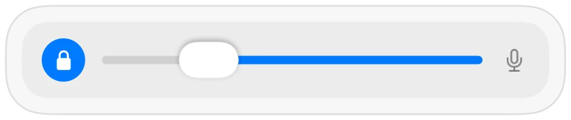

כיצד למנוע מאפליקציות לשנות את עוצמת המיקרופון ב-Mac
אפליקציות שיחה רבות מכווננות את רמת הקלט בעצמן, תכונה הנקראת בקרת עוצמה אוטומטית. אתה מגדיר רמה טובה בהגדרות המערכת, מצטרף לשיחת Google Meet, וכעבור כמה דקות המחוון זז ואנשים אומרים ששומעים אותך חלש או מעוות.
Muffle יכול לנעול את רמת המיקרופון שלך. כאשר אפליקציה כלשהי משנה אותה, Muffle מחזיר אותה מיד למקום.
נעילת רמת המיקרופון
- 1
התקן את Muffle.
- 2
לחץ על סמל Muffle בשורת התפריטים והגדר את הרמה באמצעות מחוון המיקרופון.
- 3
לחץ על המנעול לצד המחוון.
- 4
הצטרף לשיחות שלך. הרמה שלך נשארת במקום שהגדרת.

- Muffle מזהיר אותך בחלונית כאשר הרמה שלך נמוכה מדי במהלך שיחה.
- הנעילה זוכרת רמה עבור כל מיקרופון בנפרד, כך שה-AirPods שלך ומיקרופון ה-Mac שלך שומרים כל אחד על רמה משלו.
שאלות נפוצות
מדוע עוצמת המיקרופון ב-Mac שלי משתנה כל הזמן?
אפליקציות כמו Chrome, Zoom ו-Teams משתמשות בבקרת עוצמה אוטומטית ומשנות את רמת קלט המערכת בזמן שאתה מדבר.
האם אני עדיין יכול לשנות את הרמה בעצמי?
כן. השתמש במחוון בחלונית של Muffle; הוא מעדכן את הרמה הנעולה.